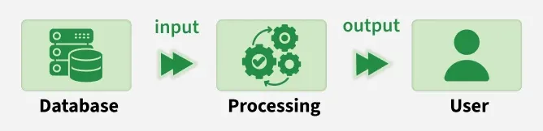
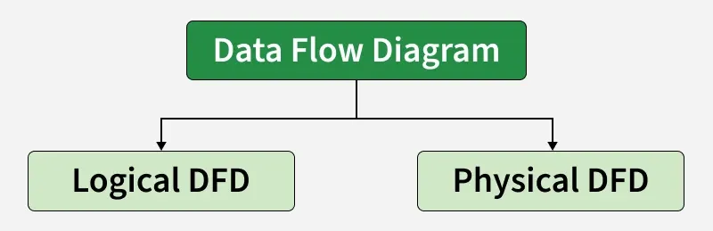
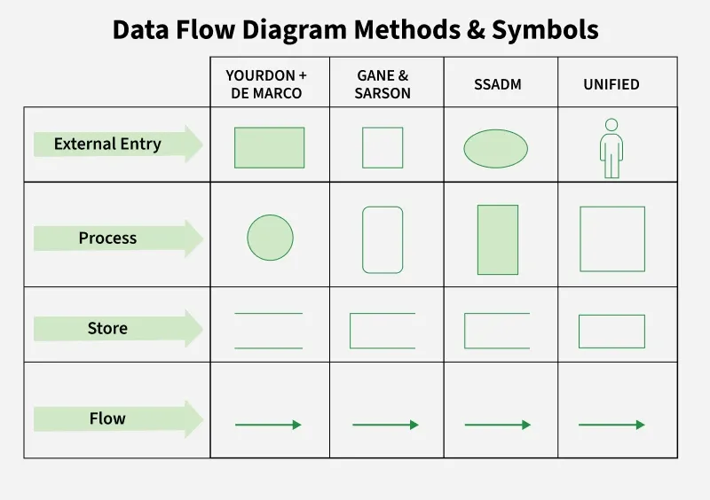
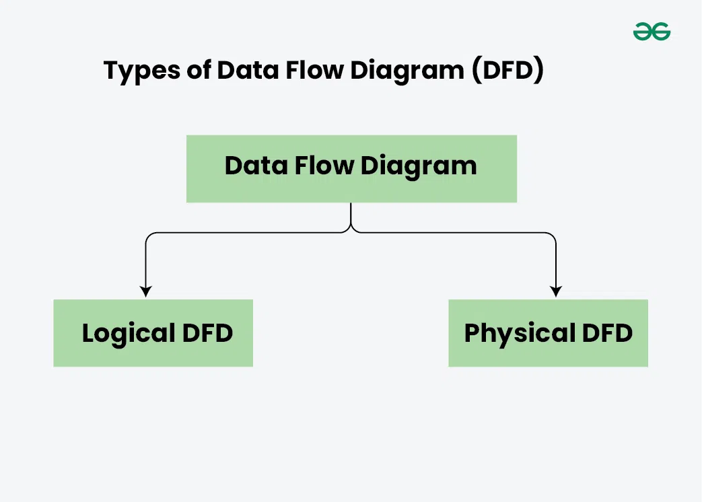
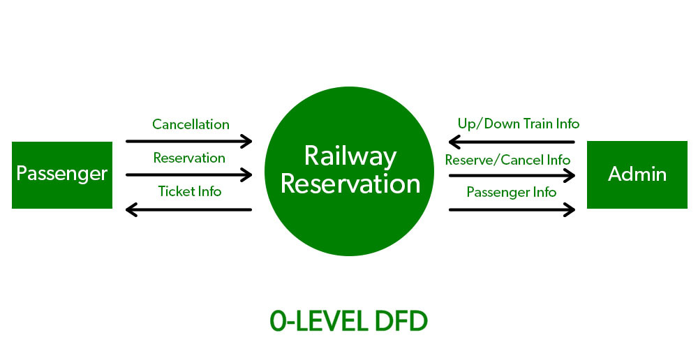
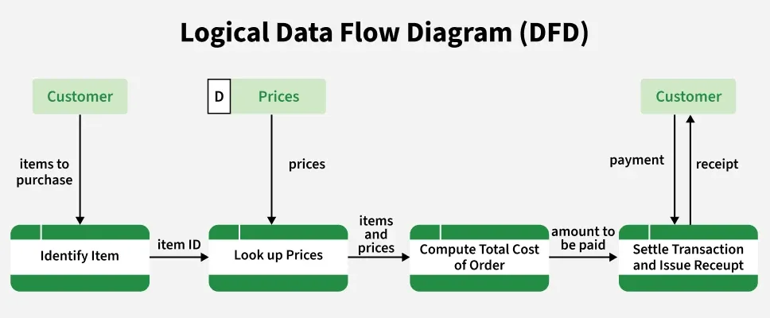
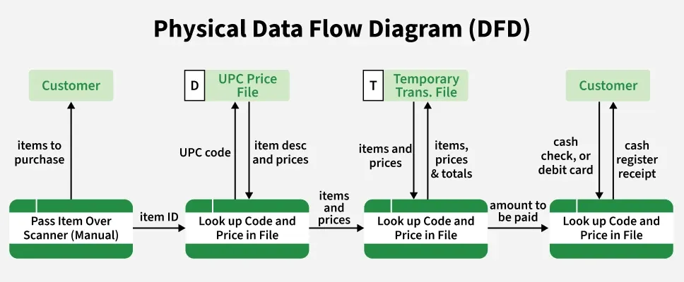
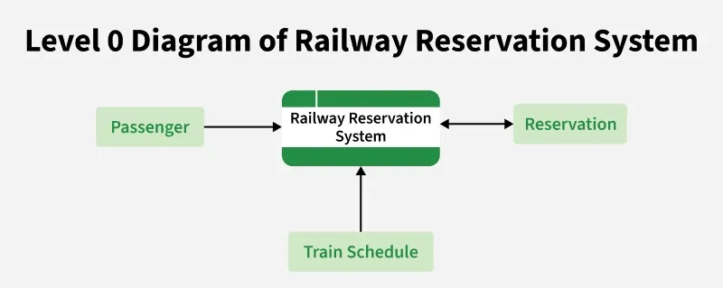
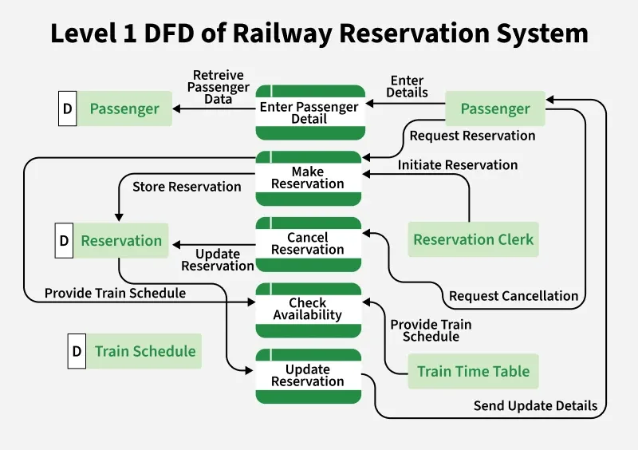

4.11 Data Flow Diagrams (DFD)
A Data Flow Diagram (DFD) is a graphical tool used to represent how data moves through a system. It shows data inputs, outputs, data stores, and the processes that transform the data. DFDs provide a high-level overview of system functionality and are widely used in structured analysis due to their simplicity and clarity for both technical and non-technical users.
DFDs help visualise the major steps in a system and illustrate how information flows between different components. They are a core system modelling tool in requirements engineering (see §4.10).

Characteristics of a Data Flow Diagram
- Graphical representation: DFDs use standard symbols (processes, data stores, data flows, external entities) to simplify complex systems into easy-to-read diagrams.
- Problem analysis: They help analyse system requirements by clarifying how data is processed, stored, and transferred.
- Abstraction: DFDs focus on what the system does, not how it is implemented — technical details are intentionally omitted.
- Hierarchy: DFDs are built in levels — Level 0 (context diagram) gives a high-level overview, and Level 1+ provides a more detailed breakdown of system processes.

Four basic DFD components

- Process: Represents input-to-output transformation in a system. Symbol: circle or rounded rectangle. Example: "Validate User," "Generate Bill". Named with a verb phrase.
- Data flow: Shows the movement of information between processes, entities, or data stores. Symbol: arrow. Each flow should represent one type of data and be given a relatable name.
- Data store (warehouse): Represents where data is stored for later use. Symbol: two horizontal lines. Examples: database, file system, document folder — not restricted to data files only.
- External entity (terminator): Users or systems outside the system boundary that interact with it — such as banks, customers, or departments not part of the modelled system.
Levels of DFD

DFDs are categorised into various levels, with each level providing different degrees of detail. Levels are numbered from 0 onward — the higher the level, the more detailed the diagram becomes.
- Level 0 DFD (context diagram): Represents the entire system as one single process, showing its interaction with external entities. It highlights major inputs and outputs without internal details.
- Level 1 DFD: Breaks the Level 0 process into major sub-processes and shows internal data flows and data stores.
- Level 2 and beyond: Further decomposes Level 1 sub-processes for a detailed view of specific functional areas — useful for large or complex systems requiring deeper analysis.

Types of Data Flow Diagram
DFDs can be classified into two main types, each focusing on a different perspective of system design:
1. Logical DFD
- The logical DFD mainly focuses on system processes and illustrates how data flows in the system without diving into technical implementation details.
- Logical DFDs are used in various organisations for smooth system operation — for example, in a banking software system to describe how data is moved from one entity to another.

2. Physical DFD
- The physical DFD shows how data flow is actually implemented in the system, including hardware, software, databases, file structures, and actual data movement and storage mechanisms.
- Physical DFDs are more specific and closer to implementation than logical DFDs.

Rules of DFD
Data can flow from:
- External entity → Process
- Process → External entity
- Process → Data store
- Data store → Process
- Process → Process
Data cannot flow from:
- External entity → External entity (directly)
- External entity → Data store (directly)
- Data store → External entity (directly)
- Data store → Data store (directly)
- Each process must have at least one input and one output.
- Data flows must be labelled; unlabelled arrows are ambiguous.
- Processes are numbered hierarchically (1, 1.1, 1.1.1) to show decomposition levels.
- Avoid control flow (decision diamonds) — DFDs show data flow, not control logic.
Example: Railway Reservation System
A railway reservation system illustrates how DFD levels are created. This example shows how data moves between users, processes, and data stores — such as passenger information, booking records, schedules, and payments — at different levels of detail.


- Level 0: Shows the reservation system as one process interacting with Passenger (external entity), Payment system, and Database (data store).
- Level 1: Breaks the system into sub-processes such as Search Train, Book Ticket, Cancel Ticket, and Process Payment.
- Level 2: Further decomposes sub-processes — for example, "Book Ticket" → Verify Availability → Calculate Fare → Confirm Booking.
Advantages and disadvantages of DFD
| Advantages | Disadvantages |
|---|---|
| Helps understand how data moves through the system. | Can be time-consuming to create for large systems. |
| Offers a clear graphical representation for both technical and non-technical users. | Focuses only on data flow — does not show control flow, performance, or UI details. |
| Breaks the system into smaller processes for better clarity and documentation. | Needs regular updates; diagrams easily become outdated if the system changes. |
| Useful for system analysis, requirement gathering, and documentation. | Requires proper knowledge to create accurate and meaningful diagrams. |
Q: Explain DFD components and levels. What are the main drawing rules?
Model answer points:
- Name four components: process, data flow, data store, external entity.
- Describe Level 0 (context), Level 1, and further decomposition.
- Distinguish logical DFD (what) from physical DFD (how).
- State rules: data can flow entity→process, process→store, process→process; cannot flow entity→entity, store→store directly.
- Distinguish logical DFD (what, no implementation detail) from physical DFD (how, with hardware/software/databases).
- Mention advantages (clarity, documentation) and disadvantages (no control flow, needs updates).
- Describe railway reservation Level 0, Level 1, and Level 2 decomposition example.